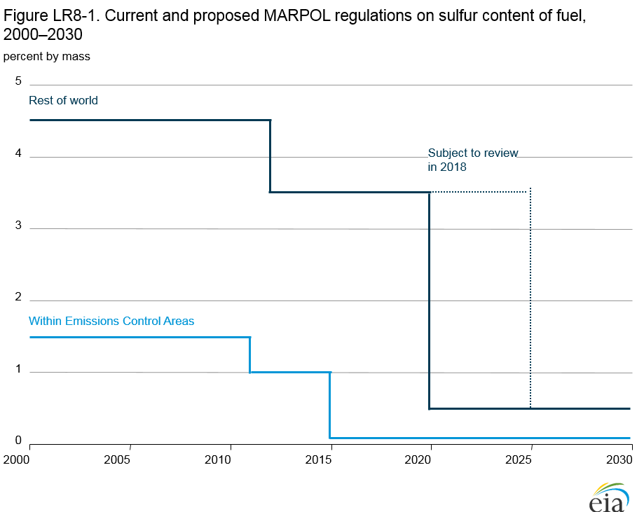

Impacts on marine fuel choice from enforcement of Emissions Control Areas
in North America and U.S. Caribbean Sea waters under the International
Convention for the Prevention of Pollution from Ships (MARPOL)
Release Date: 9/15/2016
Around the world, legislation and regulations mandating decreased emissions and lower levels of airborne pollutants have been put into place [93]. The implementation of regulations controlling emissions from the consumption of marine fuel in ocean-going vessels is one example. In March 2010, the International Maritime Organization (IMO) amended the International Convention for the Prevention of Pollution from Ships (MARPOL) to designate specific portions of the United States, Canada, and French waters as Emission Control Areas (ECAs) [94]. The area of the North American ECA includes waters adjacent to the Pacific coast, the Atlantic coast, and the Gulf coast, and the eight main Hawaiian Islands [95]. The ECAs extend up to 200 nautical miles from coasts of the United States, Canada, and the French territories but does not extend into marine areas subject to the sovereignty or jurisdiction of other countries. Compliance with the North American ECA became enforceable in August 2012 [96].
Emission Control Area Standards
The addition of ECAs to the international MARPOL treaty took effect in May 2005 and was amended in October 2008, when the member states of IMO [97] agreed to amend MARPOL Annex VI to establish new tiers or limits with progressive reductions of nitrogen oxide (NOx) and sulfur oxide (SOx) emissions from ship exhausts. The most stringent of the new international emission standards apply to ships (i.e., large ships and ocean vessels [98]) operating in designated ECAs, including the newly designated North American and Caribbean Sea ECA. Figure LR8-1 summarizes the Annex VI low-sulfur standards that apply globally (non-ECA) and within ECAs. AEO2016 considers the demands within North American and Caribbean ECAs, excluding energy demands occurring from shipping activity in non-ECA international waters.

figure data
Although the start date for the new sulfur regulation is January 1, 2020, the plan will be reviewed to check the availability of the required fuel oil, because continued global investment by refiners probably will be needed to meet required emissions reductions. Depending on the outcome of that review, the startup date of new non-ECA sulfur regulations could be postponed until at least 2025, as indicated in Figure LR8-1 [99]. The original MARPOL Annex VI introduced global limits on sulfur content per gallon of bunker fuel at 4.5% by mass or 45,000 parts per million (ppm), with the levels within ECAs set at 1.5% by mass or 15,000 ppm.
The Tier I nitrogen oxides (NOx) standards for ships with engines built before 2000 range from 9.8 grams per kWh to 17.0 grams per kWh, depending on engine speed. The Tier II standards represent a 20% reduction from Tier I, and the Tier III standards represent an 80% reduction from Tier I. Tier III NOx limits will apply to all ships constructed on or after January 1, 2016, that operate inside a NOx ECA area with engines larger than 130 kilowatts.
NEMS is the primary source for EIA's analysis of recent history and AEO2016 projections of domestic energy markets. For AEO2016, the Freight Transportation Submodule of the NEMS Transportation Demand Module handles marine fuel choices and demand for ships operating within the North American and Caribbean ECA.
Compliance options associated with marine travel in the ECAs for both new and retrofitted vessels include the use of exhaust controls (e.g., scrubbers and selective catalytic reduction), changing fuels to marine gas oil (MGO) or liquefied natural gas (LNG), and installing engine-based controls (e.g., exhaust gas recirculation). Other technologies (e.g., biofuels and water injection), which are under development but have not yet reached wide-scale adoption, may provide additional options in the future. Ship efficiency improvements, shipping demand changes, and fuel price fluctuations also are considered in the Transportation Demand Module projections for international shipping fuel consumption within the North American and U.S. Caribbean ECAs [100].
For marine travel within the North American and Caribbean ECA, AEO2016 assumes that consumption of distillate fuel oil, as the first and most widely used compliance solution, will rise rapidly between 2015 and 2019, then decline and level off after 2020, as fuel choices are affected by global emissions and fuel standards for ships. Although the long-term future of international marine fuel choice is unclear given current low and volatile prices for crude oil, it is likely that ship operators will invest in CO2 scrubbers in order to remain globally competitive, as refiners market heavy fuel oil (i.e., intermediate and residual fuel oils) at a significant discount relative to distillate fuel oil. In addition, for some types of oceangoing vessels, the use of LNG may begin to penetrate bunker fuel markets to some extent.
On July 24, 2008, the California Air Resources Board (CARB) adopted the regulation titled, Fuel Sulfur and Other Operation Requirements for Ocean-Going Vessels within California Waters and 24 Nautical Miles of the California Baseline [101].
Endnotes
- U.S. Energy Information Administration, "Large reduction in distillate fuel sulfur content has only minor effect on energy content" (Today in Energy, February 24, 2015), http://www.eia.gov/todayinenergy/detail.cfm?id=20092.
- U.S. Environmental Protection Agency, "MARPOL Annex VI" (Washington, DC: January 14, 2015), http://www2.epa.gov/enforcement/marpol-annex-vi.
- The North American ECA does not include the Pacific U.S. territories, smaller Hawaiian Islands, the Aleutian Islands and Western Alaska, and the U.S. and Canadian Arctic waters. The U.S. Caribbean ECA includes the waters adjacent to the Commonwealth of Puerto Rico and the U.S. Virgin Islands out to approximately 50 nautical miles from the coastline.
- On June 27, 2011, the U.S. Environmental Protection Agency and U.S. Coast Guard entered into a Memorandum of Understanding (MOU) to enforce Annex VI MARPOL.
- International Maritime Organization (IMO), "Member States" (2016), http://www.imo.org/en/About/Membership/Pages/MemberStates.aspx. IMO currently has 171 Member States and three Associate Members. The United States became a signatory in 1950.
- Ships propelled by Category 3 (C3) marine vessels or diesel engines are included. Marine engine and Category 3 have the same meanings given under 40 CFR 94.2. Category 3 marine vessels, for the purposes of 40 CFR Part 80, are vessels that are propelled by engines meeting the definition of "Category 3" in 40 CFR Part 1042.901. Source: IMO, Marine Environment Protection Committee (MEPC), 68th Session (May 11–15, 2015.
- IMO, Marine Environment Protection Committee (MEPC), 68th session, 11 to 15 May 2015, http://www.imo.org/en/MediaCentre/MeetingSummaries/MEPC/Pages/MEPC-68th-session.aspx.
- MARPOL Annex VI, Chapter 4, introduces two mandatory mechanisms intended to ensure an energy efficiency standard for ships: (1) the Energy Efficiency Design Index (EEDI), for new ships; and (2) the Ship Energy Efficiency Management Plan (SEEMP) for all ships. The regulations apply to all ships of and above 400 gross tonnage and entered into force on January 1, 2013. See International Maritime Organization, "Prevention of Air Pollution from Ships" (not dated), http://www.imo.org/en/OurWork/Environment/PollutionPrevention/AirPollution/Pages/Air-Pollution.aspx.
- Fuel Sulfur and Other Operational Requirements for Ocean-Going Vessels within California Waters and 24 Nautical Miles of the California Baseline, Title 13, California Code of Regulations (CCR) §2299.2 and Title 17, CCR §93118.2. The California OGV Fuel Regulation requires that the fuel must not only have a per-gallon sulfur content of 0.10% or lower, but must also meet the specifications for distillates (marine gas oil or marine diesel oil). Therefore, vessels using new hybrid fuels to comply with the Annex VI ECA-SOx regulations do not automatically comply with the OGV Regulation; to do so they must obtain a "Temporary Experimental" or "Research Exemption" from CARB.